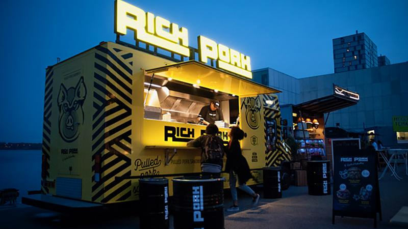
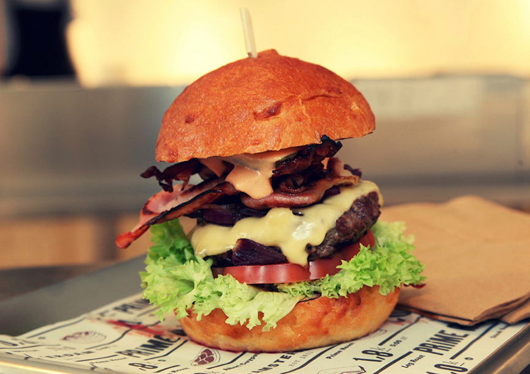
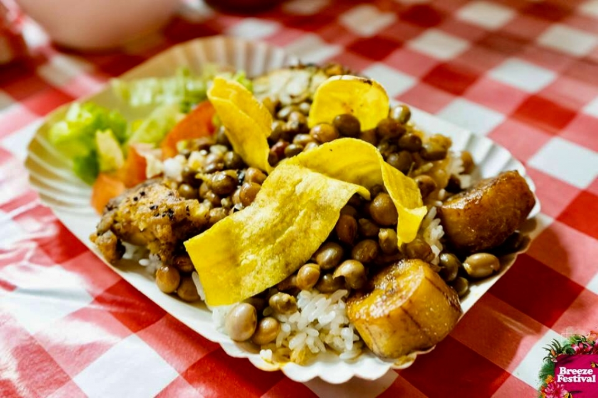

Ontstaan van de opgerolde ijsrollen liefde. Hoe het weer ook kan uitvallen in Nederland, te warm of nog vaker koud, niks staat mij in weg met de liefde voor het rollen van ijs. Dit is de manier om werkelijk te genieten.
Rich Pork

Met meer dan 25 jaar ervaring in het hogere horecasegment als chef, is mijn doelstelling een foodtruck te realiseren van hoog niveau, waarbij ik streef naar de beste prijs-kwaliteitsverhouding.
The Butcher on Wheels

De beste burgerbar van Amsterdam gaat de paden op en de lanen in. Sinds 2012 veroverde The Butcher de hoofdstad met ‘bloody delicious’ burgers. De strakke burgerbar op wielen parkeert op culinaire evenementen, muziekfestivals, en privé-events door het hele land om daar de beste Amsterdamse burger te serveren.
Joe's Kitchen

Joe’s Kitchen offers Puerto Rican Style Cuisine which is a unique tasty blend of Spanish, African, Taíno, and Asian influences. We are using only original and natural ingredients. Our vision is to create a culinary Soul Food experience that draws on the finest and freshest ingredients of different worlds.